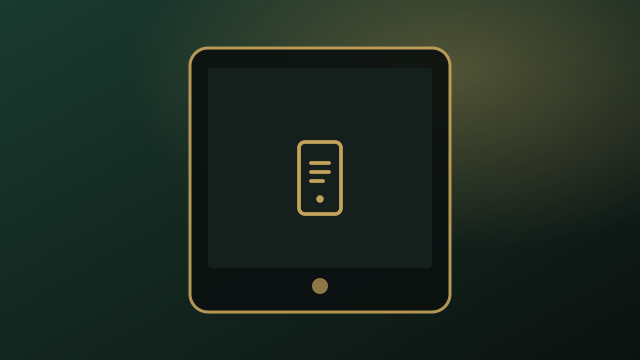
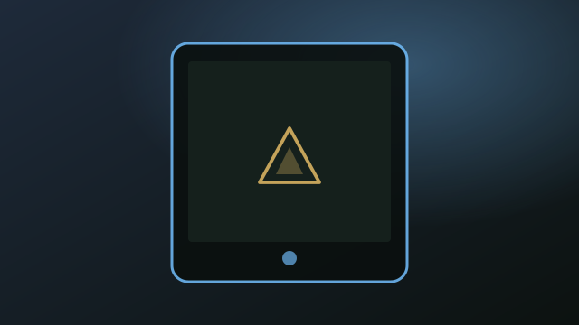
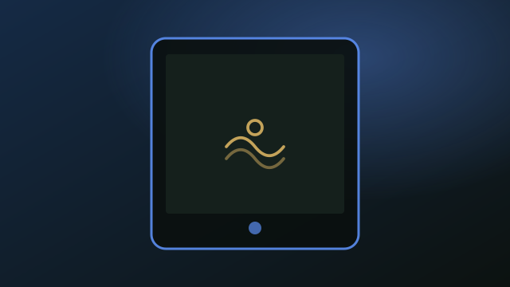
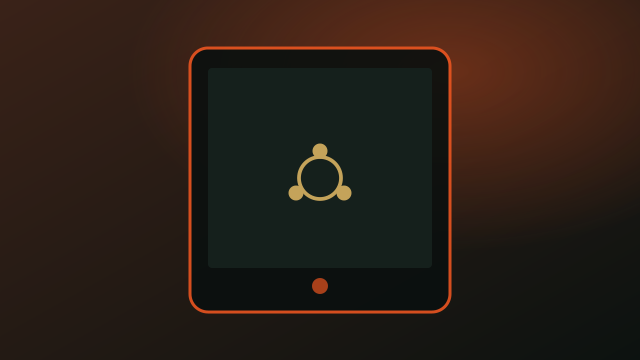
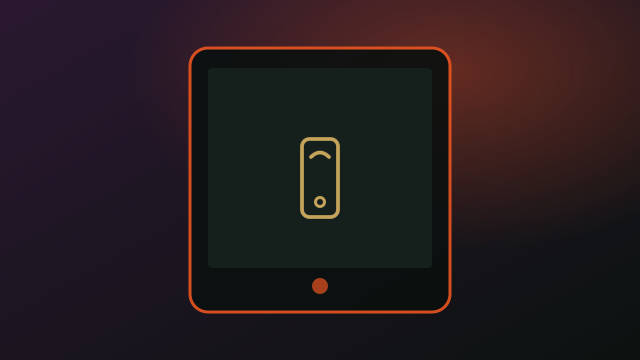
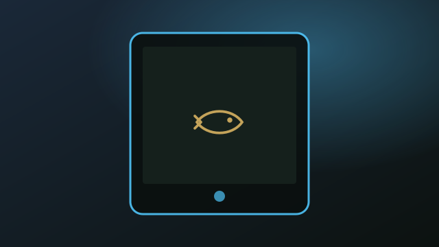
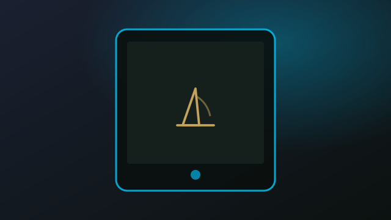

Droidian
Debian-based mobile UI (Phosh) on Halium. Device adaptation for USB gadget, audio deep_buffer, sensors, and pipa quirks.
Xiaomi Pad 6 (pipa)
Community Linux and mobile OS work for pipa — kernels, packages, and flashable images.
Operating systems running on pipa. Click a card to open its main repo.

Debian-based mobile UI (Phosh) on Halium. Device adaptation for USB gadget, audio deep_buffer, sensors, and pipa quirks.


Fedora-based Ultramarine port via Katsu. Freedreno display, ath11k Wi‑Fi, ALSA speakers, libcamera — GNOME or Plasma images.

Ubuntu 26.04 (Resolute) GNOME or Plasma rootfs via mmdebstrap. Same Mu-Silicium / ESP / boot / rootfs flash map as Ultramarine.

Halium 13 port: boot, display, touch, Wi‑Fi, BT, audio, camera, OpenStore, torch, battery, and sensors working on UT 26.04.

Nemomobile on openSUSE Tumbleweed with Glacier, mapped to the pipa UEFI flash layout. Device RPM from nemo-pipa-packaging.

Native mainline port (mesa freedreno + eglfs), not hybris. Qualcomm U-Boot into GPT linux rootfs; CI builds flash sets.